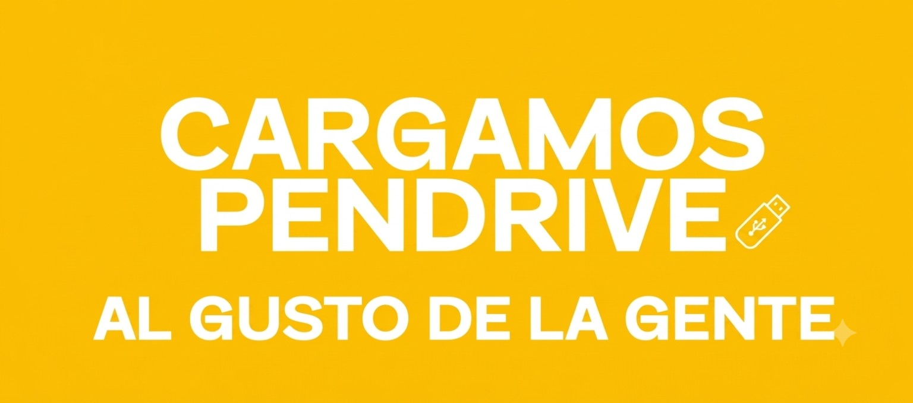
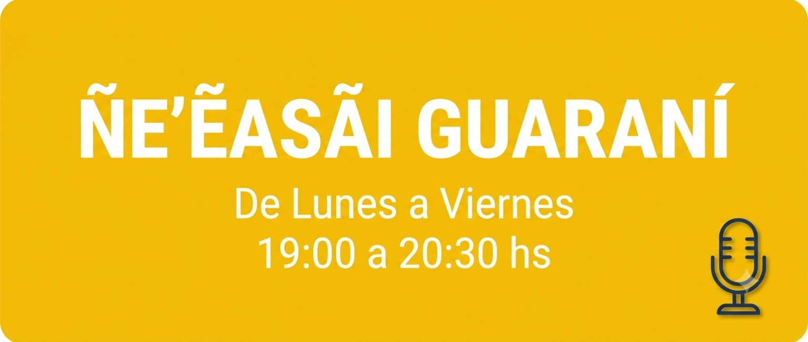

Toca para comenzar
TEO PÁEZ RADIO ONLINE
ANUNCIOS


Teo Páez Radio Online
Listo para escuchar
Instalar
TEO PÁEZ RADIO ONLINE
AL AIRE · EN VIVO
TEO PÁEZ RADIO ONLINE
Música y entretenimiento en vivo
Teo Páez Radio Online — En Vivo
Listo para escuchar